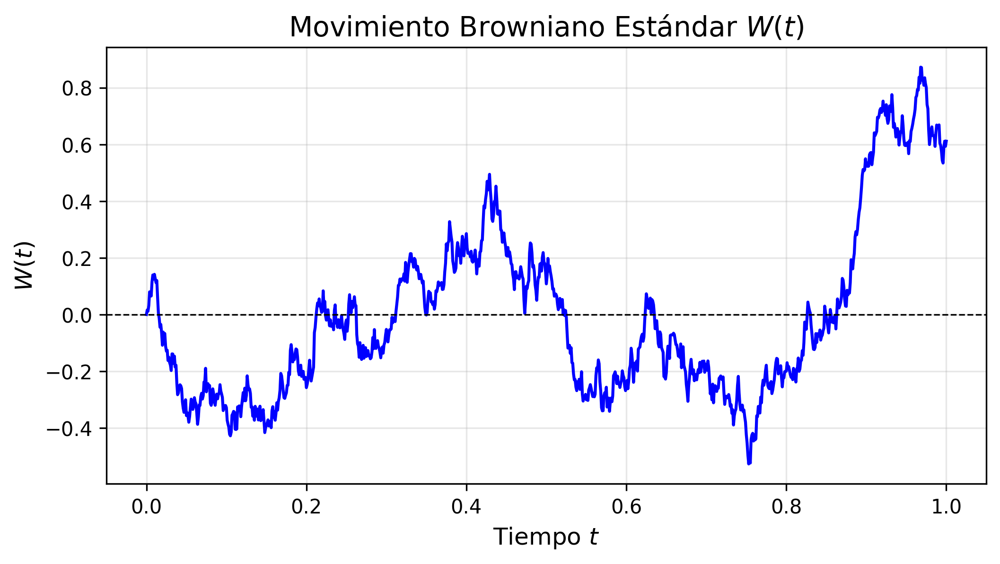
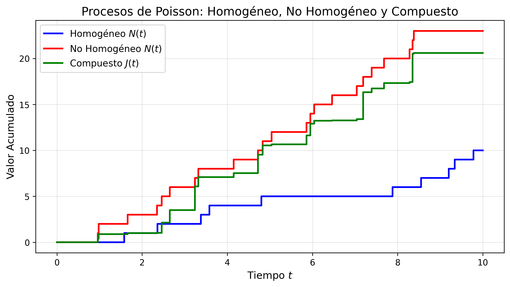

2 Fundamentos Teóricos Matemáticos
En este capítulo se presentarán las bases conceptuales y el marco formal del cálculo estocástico que fundamentan el desarrollo del modelo matemático para la red de frío. Se definirán en primer lugar los procesos estocásticos esenciales para, posteriormente, formalizar la teoría de medidas aleatorias de salto, establecer la teoría de integración de Itô, demostrar el teorema general de concatenación híbrida y concluir con la verificación analítica del sistema propuesto.
2.1 Espacios de Probabilidad, Filtraciones y Procesos Estocásticos
El modelado térmico de un refrigerador de vacunas expuesto a incertidumbres continuas y perturbaciones discretas requiere herramientas más allá del cálculo determinista. Desde una perspectiva analítica, un proceso estocástico representa la generalización de una variable aleatoria indexada en un conjunto ordenado, parametrizando la evolución de un sistema bajo incertidumbre.
Definición 2.1 (Espacio de Probabilidad Filtrado) Sea \((\Omega, \mathcal{F}, \mathbb{P})\) un espacio de probabilidad. Una filtración es una familia no decreciente de sub-\(\sigma\)-álgebras \(\{\mathcal{F}_t\}_{t \ge 0}\) de \(\mathcal{F}\), tal que \(\mathcal{F}_s \subseteq \mathcal{F}_t \subseteq \mathcal{F}\) para todo \(0 \le s \le t\). La cuaterna \((\Omega, \mathcal{F}, \{\mathcal{F}_t\}_{t \ge 0}, \mathbb{P})\) se denomina espacio de probabilidad filtrado. Se asumira que la filtración satisface las condiciones habituales:
- \(\mathcal{F}_0\) contiene todos los conjuntos \(\mathbb{P}\)-nulos de \(\mathcal{F}\).
- La filtración es continua por la derecha, i.e: \(\displaystyle \mathcal{F}_t = \bigcap_{\varepsilon > 0} \mathcal{F}_{t+\varepsilon}\) para todo \(t \ge 0\).
Intuitivamente, la \(\sigma\)-álgebra \(\mathcal{F}_t\) representa el historial completo de información observable del sistema físico (temperaturas, fallos eléctricos, aperturas de puertas) hasta el instante \(t\).
Definición 2.2 (Proceso Estocástico) Sea \((\Omega, \mathcal{F}, \mathbb{P})\) un espacio de probabilidad y sea \(\mathcal{S} \subseteq \mathbb{R}^d\) un espacio de estados dotado de su respectiva \(\sigma\)-álgebra de Borel \(\mathcal{B}(\mathcal{S})\). Un proceso estocástico es una familia de variables aleatorias \(\{X_t\}_{t \in \mathcal{T}}\) parametrizadas por \(t \in \mathcal{T}\), donde \(\mathcal{T} \subseteq \mathbb{R}\), es decir, es una función medible \(X: \mathcal{T} \times \Omega \to \mathcal{S}\).
Dependiendo de cómo es el conjunto de índices \(\mathcal{T}\), los procesos estocásticos se clasifican en dos:
- Procesos estocásticos a tiempo discreto: Si \(\mathcal{T}\) es numerable, por lo general \(\mathcal{T} = \mathbb{N}_0 = \{0, 1, 2, \dots\}\) o \(\mathcal{T} = \mathbb{Z}\), se dice que el proceso estocástico es a tiempo discreto. En este escenario, el sistema evoluciona mediante transiciones en pasos fijos discretizados.
- Procesos estocásticos a tiempo continuo: Si \(\mathcal{T}\) es un intervalo continuo de \(\mathbb{R}\), por lo general \(\mathcal{T} = [0, \infty)\) o un intervalo acotado \(\mathcal{T} = [0, T]\) con \(T > 0\), el proceso estocástico es a tiempo continuo. Esta estructura es la adecuada para modelar fenómenos físicos continuos en el dominio temporal, como el comportamiento de transferencia térmica.
Para enlazar la teoría probabilística con la observación empírica de un fenómeno aleatorio, es indispensable establecer la distinción entre el espacio funcional del proceso y sus realizaciones particulares.
Definición 2.3 (Trayectorias del Proceso Estocástico) Si \(\{X_t\}_{t \geq 0}\) es un proceso estocástico a tiempo continuo, para cada \(\omega \in \Omega\) fijo y asumiendo \(\mathcal{S} = \mathbb{R}\), se definen las trayectorias del proceso como: \[ \mathcal{T} = [0, \infty) \rightarrow \mathcal{S} = \mathbb{R} \] \[ t \rightarrow X_t(\omega). \]
Para la formulación rigurosa de integrales estocásticas (tanto respecto a difusiones como a medidas de salto), el proceso debe respetar la causalidad de la información, lo cual se formaliza mediante la adaptabilidad y la medibilidad progresiva.
Definición 2.4 (Proceso Adaptado, Medibilidad Progresiva y el Espacio Càdlàg) Un proceso estocástico \(\{X_t\}_{t \ge 0}\) es adaptado a la filtración \(\{\mathcal{F}_t\}_{t \ge 0}\) si, para cada \(t \ge 0\), la variable aleatoria \(X_t\) es \(\mathcal{F}_t\)-medible. Un requisito analítico más riguroso para la integración es la medibilidad progresiva, donde la aplicación \((s, \omega) \mapsto X_s(\omega)\) sobre el espacio producto \([0, t] \times \Omega\) es medible respecto a la \(\sigma\)-álgebra producto \(\mathcal{B}([0, t]) \otimes \mathcal{F}_t\).
Adicionalmente, diremos que el proceso pertenece al espacio càdlàg (del francés continue à droite, limite à gauche) si sus trayectorias \(t \mapsto X_t(\omega)\) son continuas por la derecha y poseen límites finitos por la izquierda para casi todo \(\omega \in \Omega\).
La restricción de trayectorias càdlàg es un requisito analítico indispensable en nuestra investigación, puesto que las perturbaciones de la red de frío por aperturas de puerta inducen discontinuidades instantáneas (saltos finitos) en la temperatura.
Finalmente, para evaluar eventos estructurales que ocurren en tiempos aleatorios (como fallas abruptas de energía de la red pública), requerimos el concepto de tiempo de paro.
Definición 2.5 (Tiempo de Paro) Una variable aleatoria \(\tau: \Omega \to [0, \infty]\) es un tiempo de paro respecto a la filtración \(\{\mathcal{F}_t\}_{t \ge 0}\) si, para todo instante \(t \ge 0\), la ocurrencia del evento estocástico antes o en el tiempo \(t\) depende únicamente de la información histórica disponible hasta ese instante; matemáticamente: \(\{\omega \in \Omega : \tau(\omega) \le t\} \in \mathcal{F}_t\).
2.2 Componentes Estocásticos Fundamentales
Las propiedades analíticas de un proceso estocástico, tales como la continuidad, la diferenciabilidad y la presencia de discontinuidades finitas, se definen estrictamente a partir del comportamiento de sus trayectorias, para más detalles consultar (Karlin y Taylor 1998). Los componentes aleatorios de nuestro sistema se sustentan en una clase específica de procesos estocásticos a tiempo continuo.
Definición 2.6 (Martingala) Un proceso estocástico a tiempo continuo \(\{M_t\}_{t \ge 0}\), integrable (i.e., \(\mathbb{E}[\vert{}M_t\vert{}] < \infty\) para todo \(t\)) y adaptado a \(\{\mathcal{F}_t\}_{t \ge 0}\), es una martingala si cumple la propiedad de valor esperado condicional nulo para los incrementos futuros: \[\mathbb{E}[M_t \mid \mathcal{F}_s] = M_s, \quad \text{casi seguramente para todo } 0 \le s \le t.\]
La condición de martingala implica la ausencia de tendencia predictible (representa matemáticamente un “juego justo”).
2.2.1 Movimiento Browniano (Proceso de Wiener)
Para representar las fluctuaciones térmicas continuas de baja intensidad asociadas al ruido intrínseco del termostato y microtransferencias de calor se utiliza el movimiento Browniano.
Definición 2.7 (Proceso de Wiener) Un proceso estocástico a tiempo continuo real-valuado \(\{W(t)\}_{t \ge 0}\) definido sobre un espacio de probabilidad filtrado \((\Omega, \mathcal{F}, \{\mathcal{F}_t\}, \mathbb{P})\) es un movimiento Browniano estándar o proceso de Wiener si cumple con las siguientes propiedades:
- \(W(0) = 0\) con probabilidad 1.
- Posee incrementos independientes; es decir, para cualesquiera tiempos \(0 < t_1 < t_2 < \dots < t_n\), las variables aleatorias \(W(t_1), W(t_2)-W(t_1), \dots, W(t_n)-W(t_{n-1})\) son mutuamente independientes.
- Posee incrementos estacionarios gaussianos, es decir: \[ W(t + h) - W(s + h) \sim W(t) - W(s) \sim \mathcal{N}(0, t-s), \ \forall 0 \le s < t, \ \forall h > 0. \]
El diferencial del proceso de Wiener, denotado como \(dW(t) = W(t+dt) - W(t)\), representa una perturbación en un intervalo infinitesimal \(dt\), caracterizada por una media \(\mathbb{E}[dW(t)] = 0\) y una varianza \(\mathbb{E}[(dW(t))^2] = dt\). Un rasgo crítico del movimiento Browniano, es que, aunque sus trayectorias son continuas, no son diferenciables en ningún punto con probabilidad 1. Esta restricción analítica invalida el uso del cálculo tradicional de Newton-Leibniz e impone la necesidad del cálculo de Itô. Para una revisión detallada de estas construcciones analíticas, se sugiere consultar a (Karatzas y Shreve 1998).

2.2.2 Procesos de Poisson y Discontinuidades por Saltos
Las aperturas de las puertas del refrigerador por el personal médico constituyen eventos que, por su naturaleza física temporal, no son continuos. Representan inyecciones discretas, repentinas y finitas de aire cálido al sistema, alterando la temperatura instantáneamente. El modelo matemático de tales eventos discretos recae en la familia de los procesos de conteo y saltos puros (Ross 1996).
Definición 2.8 (Proceso de Poisson Homogéneo) Un proceso estocástico a tiempo continuo \(\{N(t)\}_{t \ge 0}\) que toma valores enteros en el espacio de estados \(\mathcal{S} = \mathbb{N}_0\) es un proceso de Poisson homogéneo con parámetro de intensidad constante \(\lambda > 0\) si satisface las siguientes condiciones:
- \(N(0) = 0\) con probabilidad 1.
- Posee incrementos independientes; es decir, para cualesquiera tiempos \(0 \le t_1 < t_2 < \dots < t_n\), las variables aleatorias discretas \(N(t_2)-N(t_1), \dots, N(t_n)-N(t_{n-1})\) son mutuamente independientes.
- Posee incrementos estacionarios; lo que implica que la ley de probabilidad de cualquier incremento \(N(t+s) - N(s)\) depende únicamente de la amplitud temporal \(t\) y resulta invariante ante traslaciones sobre el origen cronológico \(s\). De forma explícita, la variable aleatoria \(N(t)\) sigue una distribución de Poisson con parámetro o tasa media dada por el producto \(\lambda t\), es decir:
\[ \mathbb{P}(N(t) = n) = \frac{(\lambda t)^n e^{-\lambda t}}{n!}, \quad n = 0, 1, 2, \dots \]
De manera asintótica local, las probabilidades de transición en un incremento infinitesimal \(h > 0\) están rigurosamente caracterizadas por: \[\mathbb{P}(N(t+h) - N(t) = 1) = \lambda h + o(h), \quad \mathbb{P}(N(t+h) - N(t) \ge 2) = o(h)\]
Donde la notación algebraico-asintótica de Landau \(o(h)\) denota una función de orden superior tal que \(\displaystyle \lim_{h \to 0} \frac{o(h)}{h} = 0\). Esto garantiza que la probabilidad de ocurrencia de múltiples eventos simultáneos en una fracción temporal infinitesimal es prácticamente nula.
Sin embargo, en la dinámica real de un centro de salud, la tasa de aperturas del refrigerador no es constante; exhibe una estacionalidad diaria (por ejemplo, mayor actividad en horas pico o contingencias). Para capturar esta variabilidad, generalizamos el modelo quitando la propiedad de incrementos estacionarios.
Definición 2.9 (Proceso de Poisson No Homogéneo) Un proceso estocástico a tiempo continuo \(\{N(t)\}_{t \ge 0}\) es un proceso de Poisson no homogéneo con función de intensidad \(\lambda(t) \ge 0\) localmente integrable para todo \(t \ge 0\) si satisface las siguientes condiciones:
- \(N(0) = 0\) con probabilidad 1.
- Posee incrementos independientes y la variable aleatoria de incremento \(N(t) - N(s)\) (con \(0 \le s < t\)) sigue a una distribución de Poisson con parámetro integral acumulado \(\Lambda(s, t) = \int_s^t \lambda(u) du\).
- Para todo \(t \ge 0\) y \(h > 0\), la probabilidad de que ocurra exactamente un evento en el intervalo \((t, t+h]\) está dada por la tasa instantánea en el tiempo \(t\): \[ \mathbb{P}(N(t+h) - N(t) = 1) = \lambda(t) h + o(h) \]
- La probabilidad de observar dos o más eventos en dicho intervalo es de orden superior a \(h\): \[ \mathbb{P}(N(t+h) - N(t) \ge 2) = o(h) \]
El proceso de conteo nos indica cuándo ocurren los eventos. Para acoplar la magnitud física real del evento (cuanto aumenta la temperatura interna del refrigerador por la apertura de puerta), debemos componer el proceso de conteo con magnitudes aleatorias discretas.
Definición 2.10 (Proceso de Poisson Compuesto) Sea \(\{N(t)\}_{t \ge 0}\) un proceso de Poisson no homogéneo con función de intensidad \(\lambda(t)\), y sea \(\{\gamma_i\}_{i \in \mathbb{N}}\) una sucesión de variables aleatorias independientes e idénticamente distribuidas (i.i.d.) que representan la magnitud de los saltos de los eventos, y que son estrictamente independientes de \(N(t)\). El proceso de Poisson compuesto \(J(t)\) acumula la magnitud de estos saltos en el tiempo y se define como: \[J(t) = \sum_{i=1}^{N(t)} \gamma_i\]

3 HASTA AQUI
3.0.1 Cadenas de Markov a Tiempo Continuo
Los fallos prolongados en el suministro eléctrico de la red pública alteran estructuralmente el régimen de disipación de calor del sistema (compresor encendido versus apagado). Para modelar rigurosamente las transiciones estocásticas entre estos macroestados termodinámicos, introducimos una Cadena de Markov a Tiempo Continuo (CTMC).
Definición 3.1 (Cadena de Markov a Tiempo Continuo) Sea \(\{\alpha(t)\}_{t \ge 0}\) un proceso estocástico definido en el espacio medible \((\Omega, \mathcal{F}, \mathbb{P})\), que toma valores en un espacio de estados finito y discreto de regímenes operativos \(\mathcal{M} = \{1, 2, \dots, m\}\). Se dice que el proceso estocástico de régimen \(\alpha(t)\) es una cadena de Markov en tiempo continuo si satisface estrictamente la propiedad de pérdida de memoria de Markov para cualquier historia pasada filtrada \(\mathcal{F}_s\): \[\mathbb{P}(\alpha(t+s) = j \mid \alpha(s) = i, \mathcal{F}_s) = \mathbb{P}(\alpha(t+s) = j \mid \alpha(s) = i) \quad \text{para } t, s \ge 0.\]
La evolución probabilística temporal de los regímenes se encuentra gobernada por una matriz generadora (o matriz de intensidades de transición) \(Q = (q_{ij}) \in \mathbb{R}^{m \times m}\). Si definimos la probabilidad de transición condicional infinitesimal como \(p_{ij}(h) = \mathbb{P}(\alpha(t+h) = j \mid \alpha(t) = i)\) para un incremento de tiempo \(h \downarrow 0\), la dinámica local cumple: \[p_{ij}(h) = q_{ij}h + o(h) \quad \text{para } i \neq j.\]
Por el teorema de conservación total de probabilidad, la diagonal principal de intensidades absorbe las fugas de masa probabilística tal que las sumas por filas de la matriz sean idénticamente nulas: \[q_{ii} = \lim_{h \to 0^+} \frac{p_{ii}(h) - 1}{h} = -\sum_{j \neq i, j \in \mathcal{M}} q_{ij}.\]
En nuestro análisis de la red de frío, la matriz \(Q\) encapsula las métricas de confiabilidad energética, modelando las conmutaciones macroscópicas de la dinámica del refrigerador. El análisis asintótico de sistemas con switching continuo está profundamente arraigado en la teoría moderna de fiabilidad, discutida a profundidad por (Asmussen 2003).
3.1 Teoría de Medidas Aleatorias y Saltos Estocásticos
En el modelado estocástico riguroso, la representación analítica de perturbaciones por saltos discretos (como el diferencial \(dJ(t)\) de un proceso de Poisson compuesto) en ecuaciones diferenciales requiere su formalización mediante teoría de la medida. Esto es estrictamente necesario para dotar de sentido a las integrales y poder aplicar teoremas avanzados de existencia, unicidad y convergencia (situ2005theory?).
Definición 3.2 (Medida Aleatoria de Conteo de Poisson) Sea un espacio medible de “marcas” espaciales \((\mathcal{Z}, \mathcal{B}(\mathcal{Z}))\), donde \(\mathcal{Z} \subseteq \mathbb{R}\). Una medida aleatoria de Poisson \(N(dt, dz)\) sobre el espacio producto \([0, \infty) \times \mathcal{Z}\) se define de manera que, para cualquier intervalo de tiempo \((s, t]\) y subconjunto espacial \(A \in \mathcal{B}(\mathcal{Z})\), la integral bidimensional evaluada: \[N((s,t] \times A) = \int_s^t \int_A N(du, dz)\] cuenta exactamente el número de saltos discretos que ocurrieron en el intervalo de tiempo \((s, t]\) cuya magnitud o intensidad métrica (la marca \(z\)) perteneció al conjunto \(A\).
Dado que la medida \(N(dt, dz)\) es una variable aleatoria que acumula eventos monótonamente (es un proceso de variación acotada pero estrictamente no decreciente), su esperanza matemática condicional no es nula. Para que el modelo sea manejable analíticamente y compatible con el cálculo de Itô, debe extraerse la tendencia esperada de estos saltos.
Definición 3.3 (Medida de Intensidad (Medida de Lévy compensadora)) La esperanza incondicional de la medida de conteo se denota formalmente por la medida determinista producto \(\nu(dt, dz) = \mathbb{E}[N(dt, dz)]\). Si el proceso de saltos subyacente es generado por un proceso de Poisson no homogéneo con tasa temporal de intensidad \(\lambda(t)\), y las magnitudes de salto (marcas) poseen una distribución de probabilidad espacial caracterizada por la función de distribución \(F(z)\), la medida de intensidad se factoriza analíticamente como: \[\nu(dt, dz) = \lambda(t) dF(z) dt\] donde la componente espacial \(\nu(dz) = \lambda(t) dF(z)\) se conoce como la medida de Lévy. Su función es cuantificar la tasa local esperada de eventos de un tamaño particular por unidad de tiempo.
Debido a que la medida de conteo \(N(dt, dz)\) tiene esperanza no nula, la integral estocástica directa respecto a ella genera un proceso con tendencia (drift). Para construir integrales que conserven la propiedad de martingala (como el diferencial Browniano \(dW(t)\)), el cálculo estocástico con saltos exige el centrado de la medida.
Definición 3.4 (Medida de Poisson Compensada) Se define la medida aleatoria de Poisson compensada \(\tilde{N}(dt, dz)\) como la diferencia algebraica entre la medida de conteo empírica observada y su intensidad estocástica esperada (el compensador determinista): \[\tilde{N}(dt, dz) = N(dt, dz) - \nu(dt, dz) = N(dt, dz) - \lambda(t) dF(z) dt\] Por definición estricta y bajo el teorema de descomposición de Doob-Meyer, para cualquier integrando predecible suficientemente regular, el proceso \(M_t = \int_0^t \int_A \tilde{N}(ds, dz)\) constituye una verdadera martingala local respecto a la filtración histórica \(\{\mathcal{F}_t\}_{t \ge 0}\), satisfaciendo \(\mathbb{E}[M_t] = 0\).
Con este herramental analítico fundamentado, es posible enunciar un lema de equivalencia funcional que resulta ser la “piedra angular” para validar la inclusión de Procesos de Poisson Compuestos dentro del marco del análisis estocástico general con medidas de salto, como el desarrollado por R. Situ (situ2005theory?).
Lema 3.1 (Lema de Equivalencia del Proceso de Poisson Compuesto) Sea \(J(t) = \sum_{i=1}^{N(t)} \gamma_i\) un proceso de Poisson compuesto con función de intensidad de eventos \(\lambda(t)\) y magnitudes de salto independientes \(\gamma_i\) distribuidas mediante una medida de densidad \(dF(z)\). El diferencial estocástico puro de dicho proceso admite la siguiente equivalencia integral directa en teoría de medidas: \[dJ(t) = \int_{\mathbb{R}} z N(dt, dz)\] Consecuentemente, mediante la inserción algebraica de la medida de Lévy factorizada \(\nu(dt, dz) = \lambda(t)dF(z)dt\), el diferencial puede descomponerse analíticamente en una martingala de salto compensado puro (ruido blanco de saltos) y una deriva de arrastre determinista (drift esperado): \[dJ(t) = \int_{\mathbb{R}} z \tilde{N}(dt, dz) + \left( \lambda(t) \int_{\mathbb{R}} z dF(z) \right) dt\] Lo cual es matemáticamente equivalente a afirmar que el salto total acumulado se separa en una perturbación estocástica de media cero y un término de valor esperado incondicional dado exactamente por \(\left( \lambda(t) \mathbb{E}[\gamma_i] \right) dt\).
Esta equivalencia estructural (@lem-equivalencia-saltos) nos permitirá transformar la EDE fenomenológica de la red de frío —formulada en términos de eventos discretos \(dJ(t)\)— en una ecuación estocástica compensada equivalente estandarizada, requerimiento indispensable para evaluar formalmente sus condiciones analíticas de existencia y unicidad.
3.2 Teoría de Integración Estocástica de Itô
Para dotar de significado analítico estricto a las ecuaciones diferenciales perturbadas por ruido, es imperativo establecer un marco riguroso de integración. Puesto que las trayectorias del movimiento Browniano son de variación cuadrática finita pero variación total infinita en cualquier intervalo, la integral determinista de Riemann-Stieltjes es inaplicable casi seguramente. De manera homóloga, la integración respecto a las medidas de salto aleatorias requiere cimentación en la teoría de martingalas de cuadrado integrable.
3.2.1 Integración respecto al Movimiento Browniano
Sea \(\mathcal{L}^2(\Omega \times [0, T])\) el espacio de Hilbert de los procesos estocásticos \(\{X(t)\}_{t \ge 0}\) que son progresivamente medibles respecto a la filtración \(\{\mathcal{F}_t\}_{t \ge 0}\), y que satisfacen la condición de integrabilidad de segundo momento: \(\mathbb{E}\left[\int_0^T X^2(t) dt\right] < \infty\).
Definición 3.5 (Integral Estocástica de Itô) Sea un proceso integrando \(\{X(t)\}_{t \ge 0} \in \mathcal{L}^2(\Omega \times [0, T])\). La integral de Itô del proceso \(X(t)\) respecto al proceso de Wiener estándar \(W(t)\) se define como el límite en media cuadrática (en el espacio \(L^2(\Omega, \mathbb{P})\)) de una sucesión de sumas de Riemann evaluadas estrictamente en el límite izquierdo (punto inicial) de cada subintervalo:
\[ \int_0^T X(t) dW(t) = \lim_{n \to \infty} \sum_{i=0}^{n-1} X(t_i) [W(t_{i+1}) - W(t_i)] \quad \text{en } L^2 \]
donde \(\Pi_n = \{0 = t_0 < t_1 < \dots < t_n = T\}\) es una sucesión de particiones del intervalo acotado \([0, T]\) tal que el diámetro de la malla \(\max_{i} (t_{i+1} - t_i)\) converge asintóticamente a cero.
La restricción fundamental de evaluar el integrando \(X(t_i)\) en el extremo izquierdo del incremento estocástico \(\Delta W(t_i)\) es lo que garantiza la no-anticipatividad. Matemáticamente, esto preserva la propiedad de martingala del movimiento Browniano en la integral resultante, asegurando que su esperanza matemática incondicional sea idénticamente nula: \(\mathbb{E}\left[\int_0^T X(t) dW(t)\right] = 0\). Esta construcción provee una de las métricas de acotación analítica más poderosas del cálculo estocástico.
Teorema 3.1 (Isometría de Itô para el Proceso de Wiener) Para cualquier proceso progresivamente medible \(\{X(t)\}_{t \ge 0} \in \mathcal{L}^2(\Omega \times [0, T])\), la varianza topológica de la integral estocástica es exactamente equivalente a la esperanza matemática de la integral determinista del cuadrado del proceso respecto a la medida de Lebesgue temporal:
\[ \mathbb{E}\left[ \left( \int_0^T X(t) dW(t) \right)^2 \right] = \mathbb{E}\left[ \int_0^T X^2(t) dt \right] \]
La demostración de esta isometría descansa en la ortogonalidad de los incrementos independientes de \(W(t)\) y constituye el pilar analítico indispensable para acotar los errores cuadráticos y demostrar la convergencia y unicidad de soluciones en ecuaciones estocásticas (Karatzas y Shreve 1998).
3.2.2 Integración Estocástica respecto a Medidas Aleatorias de Salto
Para modelar matemáticamente la acumulación de energía térmica proveniente de eventos discretos aleatorios, definimos la integral de línea respecto a la medida aleatoria de Poisson compensada \(\tilde{N}(dt, dz)\).
Definición 3.6 (Integral Estocástica respecto a la Medida de Poisson Compensada) Sea \(H(t, z, \omega): [0, \infty) \times \mathbb{R} \times \Omega \to \mathbb{R}\) un proceso de integración predecible respecto a la filtración generada \(\mathcal{F}_t\), tal que satisface la condición de acotación de la medida producto: \(\mathbb{E} \left[ \int_0^T \int_{\mathbb{R}} \vert{}H(t, z)\vert{}^2 \nu(dz) dt \right] < \infty\). La integral estocástica de \(H\) respecto a la medida compensada \(\tilde{N}(dt, dz)\) está analíticamente bien definida en \(L^2(\Omega, \mathbb{P})\) y constituye, por construcción, una martingala de cuadrado integrable centrada: \[ \mathbb{E}\left[ \int_0^T \int_{\mathbb{R}} H(t, z) \tilde{N}(dt, dz) \right] = 0, \quad \text{para todo } T \ge 0. \]
De forma homóloga a la isometría de difusión continua, existe una isometría exacta para los operadores de salto que permite transferir el control analítico de las varianzas discretas al dominio de la integral de Lebesgue convencional.
Teorema 3.2 (Isometría de Itô para la Medida Compensada) Para todo integrando espacial predecible admisible \(H(t, z)\), el segundo momento de la norma en el espacio de Hilbert de la integral estocástica de salto satisface la siguiente identidad fundamental: \[ \mathbb{E}\left[ \left( \int_0^T \int_{\mathbb{R}} H(t, z) \tilde{N}(dt, dz) \right)^2 \right] = \mathbb{E}\left[ \int_0^T \int_{\mathbb{R}} \vert{}H(t, z)\vert{}^2 \nu(dz) dt \right] \]
Este resultado riguroso, documentado extensamente en la teoría de Situ (situ2005theory?), confirma que la variabilidad estocástica del ruido de saltos se comporta asintóticamente como una integral determinista sobre el compensador de Lévy \(\nu(dz)dt\), habilitando el uso del cálculo de variaciones y cotas integrales para el análisis de estabilidad del modelo de refrigeración.
3.3 Ecuaciones Diferenciales Estocásticas Continuas
Con el andamiaje de integración establecido, es posible formular ecuaciones que combinan una tendencia física determinista con perturbaciones aleatorias.
Definición 3.7 (Ecuación Diferencial Estocástica Clásica) Una ecuación diferencial estocástica continua para un proceso \(\{X(t)\}_{t \ge 0}\) es una relación simbólica expresada en su forma diferencial mediante:
\[ dX(t) = b(t, X(t)) dt + \sigma(t, X(t)) dW(t) \tag{3.1}\]
donde el término \(b(t, X(t))\) denota el coeficiente de deriva (tendencia determinista) y \(\sigma(t, X(t))\) representa el coeficiente de difusión (volatilidad).
El término \(dX(t)\) en la Ecuación 4.1 no debe interpretarse como una derivada ordinaria, sino como una representación abreviada de su ecuación integral equivalente, la cual otorga el verdadero sentido matemático a la igualdad:
\[ X(t) = X(0) + \int_0^t b(s, X(s)) ds + \int_0^t \sigma(s, X(s)) dW(s) \quad \text{casi seguramente.} \tag{3.2}\]
Para garantizar que el modelo matemático no resulte en comportamientos explosivos ni ambiguos (múltiples trayectorias cruzadas), se exige el cumplimiento de restricciones geométricas sobre los coeficientes.
Teorema 3.3 (Teorema Clásico de Existencia y Unicidad de Itô) Sea la EDE definida en la Ecuación 4.1 con una condición inicial \(X(0) = x_0\), medible respecto a \(\mathcal{F}_0\) e independiente del proceso de Wiener, con \(\mathbb{E}[\vert{}x_0\vert{}^2] < \infty\). Supóngase que para todo \(t \in [0, T]\) y estados \(x, y \in \mathbb{R}\), los coeficientes satisfacen las siguientes dos restricciones para constantes positivas \(K, L > 0\):
- Condición de Lipschitz Global: Las funciones no cambian tan bruscamente como para permitir bifurcaciones en el espacio de fase: \[ \vert{}b(t, x) - b(t, y)\vert{}^2 + \vert{}\sigma(t, x) - \sigma(t, y)\vert{}^2 \le L \vert{}x - y\vert{}^2 \]
- Condición de Crecimiento Lineal: El sistema no diverge a infinito en tiempo finito: \[ \vert{}b(t, x)\vert{}^2 + \vert{}\sigma(t, x)\vert{}^2 \le K (1 + \vert{}x\vert{}^2) \]
Bajo el cumplimiento de ambas condiciones, la ecuación tiene una solución fuerte global única \(\{X(t)\}_{t \in [0, T]}\), adaptada a la filtración \(\mathcal{F}_t\), con trayectorias continuas con probabilidad 1 (Karatzas y Shreve 1998).
Para transformar analíticamente las soluciones o funciones dependientes de una EDE continua, el cálculo tradicional se sustituye por la regla de la cadena estocástica.
Teorema 3.4 (Lema de Itô para Difusiones Continuas) Sea un proceso estocástico \(\{X(t)\}_{t \ge 0}\) que satisface la Ecuación 4.1, y sea \(V(t, x)\) una función escalar continuamente diferenciable en su componente temporal \(t\) (\(\mathcal{C}^1\)) y dos veces continuamente diferenciable en su componente espacial \(x\) (\(\mathcal{C}^2\)). El diferencial estocástico de la función compuesta viene dado por:
\[ dV(t, X(t)) = \left[ \frac{\partial V}{\partial t} + b(t, X(t))\frac{\partial V}{\partial x} + \frac{1}{2}\sigma^2(t, X(t))\frac{\partial^2 V}{\partial x^2} \right] dt + \sigma(t, X(t))\frac{\partial V}{\partial x} dW(t) \]
El término de segundo orden respecto a la derivada espacial es el núcleo de la corrección de Itô. Surge del hecho topológico de que la variación cuadrática del movimiento Browniano sobre un intervalo infinitesimal obedece la regla \((dW(t))^2 \to dt\) en un sentido probabilístico en \(L^2\).
3.3.1 El Proceso de Ornstein-Uhlenbeck Clásico
Como paso previo al desarrollo de nuestro modelo termodinámico final, es indispensable introducir un tipo particular de EDE que modela la inercia física y la atracción hacia un estado de equilibrio en un sistema cerrado.
Definición 3.8 (Proceso de Ornstein-Uhlenbeck) Un proceso estocástico \(\{X(t)\}_{t \ge 0}\) es un proceso de Ornstein-Uhlenbeck si satisface la siguiente ecuación diferencial estocástica lineal homogénea:
\[ dX(t) = \kappa (\theta - X(t)) dt + \sigma dW(t) \tag{3.3}\]
donde \(\kappa > 0\) representa la velocidad o tasa de reversión a la media, \(\theta \in \mathbb{R}\) denota el nivel asintótico de equilibrio a largo plazo y \(\sigma > 0\) es la magnitud del ruido térmico intrínseco.
La característica principal de la Ecuación 4.3 radica en su deriva lineal \(b(x) = \kappa(\theta - x)\). Cuando el estado del proceso supera el valor de equilibrio (\(X(t) > \theta\)), el término de deriva se vuelve estrictamente negativo, forzando a la trayectoria a descender; inversamente, si el proceso se encuentra por debajo del nivel de consigna (\(X(t) < \theta\)), la deriva se vuelve positiva, propulsando un crecimiento correctivo. Esta propiedad topológica de atracción (convergencia estocástica a la media) convierte a este proceso en la base fenomenológica ideal para simular la oscilación térmica de refrigeradores de vacunas regidos por la ley empírica de enfriamiento de Newton.
3.4 Herramientas Analíticas Auxiliares
Antes de formalizar la teoría de los sistemas estocásticos híbridos y proceder con la verificación teórica y el desarrollo de nuestro modelo, es necesario enunciar dos resultados clásicos del análisis matemático. Estas herramientas proporcionan el soporte lógico para acotar el crecimiento de las trayectorias estocásticas y para demostrar la unicidad de las soluciones.
Lema 3.2 (Desigualdad de Potencias (Cauchy-Schwarz elemental)) Para cualesquiera números reales \(a, b \in \mathbb{R}\) y para cualquier entero \(p \ge 1\), la convexidad de la función \(x \mapsto \vert{}x\vert{}^p\) implica la siguiente cota superior geométrica: \[\vert{}a \pm b\vert{}^p \le 2^{p-1} (\vert{}a\vert{}^p + \vert{}b\vert{}^p)\] En el contexto del análisis en \(L^2\) (donde \(p=2\)), esta desigualdad se reduce a la forma fundamental que utilizaremos para acotar la combinación de operadores de deriva y varianza estocástica: \[\vert{}a \pm b\vert{}^2 \le 2\vert{}a\vert{}^2 + 2\vert{}b\vert{}^2\]
Lema 3.3 (Desigualdad Integral de Grönwall) Sea \(T > 0\) y sean \(u(t)\) y \(v(t)\) funciones reales, continuas y no negativas definidas en el intervalo \([0, T]\). Si existe una constante \(C \ge 0\) tal que para todo \(t \in [0, T]\) se cumple la desigualdad integral implícita: \[u(t) \le C + \int_0^t v(s) u(s) ds\] Entonces, la función \(u(t)\) está estrictamente acotada por la función exponencial de la integral de \(v(t)\): \[u(t) \le C \exp\left( \int_0^t v(s) ds \right)\]
En la teoría de ecuaciones diferenciales estocásticas, el Lema de Grönwall se utiliza asumiendo que la función de estado \(u(t)\) representa la esperanza matemática de la diferencia al cuadrado entre dos posibles soluciones de un sistema, i.e., \(u(t) = \mathbb{E}[\vert{}X_1(t) - X_2(t)\vert{}^2]\). Si mediante estimaciones de Itô se logra demostrar que \(u(t) \le 0 + \int L u(s)ds\), el lema dictamina que \(u(t) \le 0 \cdot e^{Lt} = 0\), probando así analíticamente la unicidad casi segura de la solución a lo largo del tiempo.
3.5 Teoría de Existencia y Unicidad para Sistemas Híbridos (Discontinuidades y Cambios de Régimen)
Los modelos de difusión continua resultan insuficientes cuando el fenómeno físico exhibe transiciones estructurales de entorno (como un fallo eléctrico general en la red pública) y choques discretos instantáneos (como la apertura de la puerta de un refrigerador). La amalgama de estos comportamientos da lugar a un sistema híbrido impulsado por medidas de salto espacial y conmutaciones markovianas.
Definición 3.9 (Ecuación Diferencial Estocástica Híbrida) Sea \(\alpha(t)\) una cadena de Markov a tiempo continuo en un espacio de estados finito \(\mathcal{M}\). Una EDE híbrida con saltos es una ecuación gobernada por un régimen markoviano y perturbada por una medida de Poisson compensada \(\tilde{N}(dt, dz) = N(dt, dz) - \nu(dt, dz)\), cuya forma diferencial es:
\[ dX(t) = b(t, X(t^-), \alpha(t^-)) dt + \sigma(t, X(t^-), \alpha(t^-)) dW(t) + \int_{\mathbb{R}} \gamma(t, X(t^-), \alpha(t^-), z) \tilde{N}(dt, dz) \]
Dado que la función objetivo presenta discontinuidades puntuales y cambios estructurales, el teorema fundamental de Itô debe expandirse para incluir la interacción con las medidas de salto y la matriz generadora del régimen discreto.
Teorema 3.5 (Fórmula de Itô Generalizada para Sistemas Híbridos) Sea \(V(t, x, i)\) una función continuamente diferenciable en el tiempo \(t\) (\(\mathcal{C}^1\)) y dos veces continuamente diferenciable en el espacio \(x\) (\(\mathcal{C}^2\)) para cada régimen operativo \(i \in \mathcal{M}\). Si \(X(t)\) es un proceso que satisface la EDE híbrida descrita anteriormente, el diferencial estocástico de la función compuesta viene dado por:
\[ \begin{aligned} dV(t, X(t), \alpha(t)) = & \left[ \frac{\partial V}{\partial t} + \frac{\partial V}{\partial x}b(t, X, \alpha) + \frac{1}{2}\frac{\partial^2 V}{\partial x^2}\sigma^2(t, X, \alpha) + \sum_{j \in \mathcal{M}} q_{\alpha(t)j} V(t, X, j) \right] dt \\ & + \int_{\mathbb{R}} \left[ V(t, X(t^-) + \gamma, \alpha(t^-)) - V(t, X(t^-), \alpha(t^-)) - \frac{\partial V}{\partial x}\gamma(t, X(t^-), \alpha(t^-), z) \right] \nu(dz) dt \\ & + \frac{\partial V}{\partial x}\sigma(t, X, \alpha) dW(t) \\ & + \int_{\mathbb{R}} \left[ V(t, X(t^-) + \gamma, \alpha(t^-)) - V(t, X(t^-), \alpha(t^-)) \right] \tilde{N}(dt, dz) \end{aligned} \]
Esta formulación rigurosa añade al operador diferencial clásico una sumatoria ponderada por las intensidades de transición de la matriz \(Q\) de la cadena de Markov y un operador de diferencias finitas exacto que absorbe las discontinuidades generadas por la medida de salto \(\nu(dz)\).
3.5.1 Teoremas de Existencia y Unicidad Híbrida
Para garantizar que un sistema estocástico híbrido posea viabilidad analítica, la existencia y unicidad de sus soluciones se construyen en dos fases teóricas: primero garantizando el comportamiento frente a los saltos de Poisson, y luego concatenando la solución a través de los tiempos de conmutación del régimen de la cadena de Markov.
Teorema 3.6 (Teorema de Existencia y Unicidad con Saltos de Poisson (Teorema 117 de R. Situ)) Para un régimen estático \(\alpha(t) = i\), sea la ecuación diferencial estocástica \(dX(t) = b(t, X(t^-))dt + \sigma(t, X(t^-))dW(t) + \int_{\mathbb{R}} \gamma(t, X(t^-), z) \tilde{N}(dt, dz)\). Supóngase que los coeficientes satisfacen de manera estricta las siguientes dos condiciones para constantes \(K, L > 0\):
- Condición de Lipschitz Global: \[\vert{}b(t, x) - b(t, y)\vert{}^2 + \vert{}\sigma(t, x) - \sigma(t, y)\vert{}^2 + \int_{\mathbb{R}} \vert{}\gamma(t, x, z) - \gamma(t, y, z)\vert{}^2 \nu(dz) \le L \vert{}x - y\vert{}^2\]
- Condición de Crecimiento Lineal: \[\vert{}b(t, x)\vert{}^2 + \vert{}\sigma(t, x)\vert{}^2 + \int_{\mathbb{R}} \vert{}\gamma(t, x, z)\vert{}^2 \nu(dz) \le K (1 + \vert{}x\vert{}^2)\]
Entonces, para cualquier condición inicial \(\mathcal{F}_0\)-medible tal que \(\mathbb{E}[\vert{}X(0)\vert{}^2] < \infty\), la EDE admite una solución fuerte global y única, con trayectorias càdlàg casi seguramente (situ2005theory?).
Una vez garantizada la solución bajo un régimen constante mediante la métrica de R. Situ, la validación global del sistema híbrido se obtiene mediante una demostración constructiva basada en la técnica de empalme topológico en los tiempos de parada estocásticos de la cadena de Markov. Demostraremos formalmente este resultado fundamental que asocia la teoría de difusiones con la teoría de switching de Mao y Yuan, y Yin y Zhu (Yin y Zhu 2010).
Teorema 3.7 (Teorema de Existencia y Unicidad para la EDE con Régimen de Markov) Sea \(\alpha(t)\) una cadena de Markov en tiempo continuo con espacio de estados finito \(\mathcal{M} = \{1, 2, \dots, m\}\) y matriz generadora acotada \(Q = (q_{ij})\), cuyas tasas de transición son finitas. Consideremos la ecuación diferencial estocástica híbrida: \[ \begin{aligned} dX(t) ={}& b_{\alpha(t^-)}(t, X(t^-)) dt \\ &+ \sigma_{\alpha(t^-)}(t, X(t^-)) dW(t) \\ &+ \int_{\mathbb{R}} \gamma_{\alpha(t^-)}(t, X(t^-), z) \tilde{N}(dt, dz), \end{aligned} \] con condición inicial \(X(0) = X_0\), donde \(X_0\) es \(\mathcal{F}_0\)-medible y \(\mathbb{E}[|X_0|^2] < \infty\).
Supongamos que se cumplen las siguientes hipótesis:
- Para cada régimen \(i \in \mathcal{M}\), los coeficientes \(b_i, \sigma_i, \gamma_i\) satisfacen las condiciones de Lipschitz global y de crecimiento lineal del Teorema de Existencia y Unicidad con Saltos de Poisson (Teorema de Situ).
- Los procesos \(W(t)\), \(N(dt, dz)\) y \(\alpha(t)\) son mutuamente independientes, y la medida compensadora de \(N\) está dada por \(\nu_t(dz)dt = \lambda(t)F(dz)dt\), donde la intensidad \(\lambda(t)\) es una función localmente integrable.
- La cadena de Markov no presenta explosión, es decir, tiene un número finito de cambios de régimen casi seguramente en cualquier intervalo temporal acotado.
Entonces, para todo horizonte finito \(H < \infty\), la ecuación híbrida admite una única solución fuerte con trayectorias càdlàg en el intervalo \([0, H]\), casi seguramente. Además, bajo las condiciones de crecimiento lineal uniformes en los regímenes, la solución satisface la condición de integrabilidad del supremo: \[ \mathbb{E}\left[ \sup_{0 \le t \le H} |X(t)|^2 \right] < \infty. \]
Demostración:
La prueba se construye mediante un argumento de inducción estocástica, concatenando las soluciones locales entre los tiempos de cambio de régimen.
Paso 1: Tiempos de cambio de régimen. Sean \(\tau_0 = 0\) y definamos recursivamente la secuencia de tiempos de parada: \[ \tau_{n+1} = \inf\{t > \tau_n : \alpha(t) \neq \alpha(t^-)\}, \quad n \ge 0, \] los cuales corresponden a los instantes sucesivos de cambio de régimen. Por la hipótesis 3 (no explosión), para cualquier horizonte temporal finito \(H < \infty\), el número de transiciones en dicho intervalo es finito casi seguramente: \[ N_\alpha(H) := \#\{n \ge 1 : \tau_n \le H\} < \infty \quad \text{casi seguramente.} \] En consecuencia, casi seguramente, el intervalo \([0, H]\) queda particionado en un número finito de subintervalos estocásticos semiabiertos en los que el régimen de la cadena permanece constante: \[ [\tau_0, \tau_1), [\tau_1, \tau_2), \dots, [\tau_{N_\alpha(H)}, H]. \] En el interior de cada uno de estos subintervalos, la dinámica de \(X(t)\) corresponde a una EDE con coeficientes fijos asociados a un único régimen.
Paso 2: Existencia y unicidad en el primer intervalo. En el intervalo inicial \([0, \tau_1)\), el régimen del sistema es constante e igual a \(\alpha(0)\). Por lo tanto, la ecuación híbrida colapsa a la siguiente EDE clásica con saltos: \[ \begin{aligned} dX(t) ={}& b_{\alpha(0)}(t, X(t^-)) dt \\ &+ \sigma_{\alpha(0)}(t, X(t^-)) dW(t) \\ &+ \int_{\mathbb{R}} \gamma_{\alpha(0)}(t, X(t^-), z) \tilde{N}(dt, dz). \end{aligned} \] Por la hipótesis 1, los coeficientes correspondientes al régimen \(\alpha(0)\) satisfacen estrictamente las condiciones de Lipschitz global y de crecimiento lineal. En consecuencia, el Teorema de Existencia y Unicidad con Saltos de Poisson (Teorema de Situ) garantiza la existencia y unicidad de una solución fuerte para esta ecuación en el intervalo dado.
Construimos la solución hasta el primer tiempo de cambio estocástico y definimos su valor en ese instante crítico mediante el límite por la izquierda: \[ X(\tau_1) = X(\tau_1^-). \] Esta igualdad matemática expresa que el cambio de régimen en sí mismo no induce un salto instantáneo en la variable de estado. Las discontinuidades de \(X(t)\) provienen exclusivamente de las perturbaciones integradas respecto a la medida aleatoria de Poisson \(\tilde{N}(dt, dz)\).
Paso 3: Continuación después de un cambio de régimen. Supongamos, como hipótesis de inducción, que la solución ha sido construida de forma única y fuerte hasta el tiempo de parada \(\tau_n\), y que el estado \(X(\tau_n)\) está bien definido y es \(\mathcal{F}_{\tau_n}\)-medible. En el subsecuente intervalo \([\tau_n, \tau_{n+1})\), el régimen del sistema permanece constante e igual a \(\alpha(\tau_n)\).
La condición inicial para la evolución en este nuevo intervalo es precisamente \(X(\tau_n)\). Gracias a la hipótesis 2 (independencia de los procesos conductores \(W\), \(N\) y \(\alpha\)) y a la propiedad de los incrementos independientes posteriores a un tiempo de parada para el movimiento Browniano y los procesos de Poisson, la ecuación en este intervalo adopta nuevamente la forma de una EDE con régimen fijo, condicionada a la información en \(\tau_n\).
Aplicando iterativamente el teorema de Situ al régimen \(\alpha(\tau_n)\), se obtiene una solución fuerte y única en dicho subintervalo. El valor del estado en el siguiente tiempo de cambio se define por continuidad respecto al cambio de régimen: \[ X(\tau_{n+1}) = X(\tau_{n+1}^-), \] salvo, por supuesto, por los saltos intrínsecos que provengan de la propia medida de Poisson evaluada en ese instante. Bajo la suposición de independencia mutua, la probabilidad de que un salto generado por la medida de Poisson ocurra simultáneamente y coincida exactamente con un tiempo de cambio de la cadena de Markov es de medida cero.
Aplicando este argumento por inducción matemática, se construye de manera rigurosa una solución única en cada subintervalo de régimen constante.
Paso 4: Concatenación topológica de las soluciones. Dado que en el horizonte acotado \([0, H]\) ocurren casi seguramente un número finito de cambios de régimen (\(N_\alpha(H) < \infty\)), el procedimiento iterativo detallado anteriormente requiere un número estrictamente finito de aplicaciones del teorema de Situ. Las soluciones locales construidas en los distintos subintervalos coinciden analíticamente en los tiempos de empalme \(\{\tau_n\}\), puesto que el valor inicial de cada nuevo tramo corresponde exactamente al valor final límite del tramo predecesor.
Por consiguiente, podemos definir una única trayectoria global \(X(t)\) en todo el dominio \([0, H]\) concatenando las soluciones locales de los distintos regímenes. Puesto que cada tramo individual habita el espacio de funciones càdlàg, y los empalmes en los tiempos \(\tau_n\) no introducen discontinuidades adicionales en la variable de estado, se concluye que la trayectoria global \(X(t)\) también es globalmente càdlàg. Esto demuestra concluyentemente la existencia fuerte de una solución en el intervalo \([0, H]\).
Paso 5: Unicidad global de la solución. Para demostrar la unicidad, sean \(X(t)\) y \(\widehat{X}(t)\) dos soluciones de la ecuación diferencial estocástica híbrida, partiendo de la misma condición inicial \(\mathcal{F}_0\)-medible y gobernadas por los mismos procesos conductores \(W(t)\), \(N(dt, dz)\) y \(\alpha(t)\).
En el primer intervalo de régimen constante \([0, \tau_1)\), ambas soluciones satisfacen idéntica EDE y comparten la condición inicial \(X(0)\). Por la unicidad dictaminada por el teorema de Situ, se cumple que: \[ X(t) = \widehat{X}(t) \] para todo \(t \in [0, \tau_1)\), casi seguramente. En particular, sus valores en el primer tiempo de cambio estocástico coinciden: \(X(\tau_1) = \widehat{X}(\tau_1)\). Por ende, en el subsecuente intervalo \([\tau_1, \tau_2)\), ambas soluciones vuelven a satisfacer la misma EDE con idéntica condición inicial, y la unicidad local de Situ vuelve a implicar que coinciden en dicho intervalo.
Repitiendo el argumento lógico en cada subintervalo sucesivo, y amparándonos en que el número de cambios en \([0, H]\) es finito casi seguramente, obtenemos la igualdad global de las trayectorias: \[ \mathbb{P}\left( X(t) = \widehat{X}(t) \text{ para todo } t \in [0, H] \right) = 1. \] Por consiguiente, la solución híbrida es estrictamente única.
Finalmente, las condiciones de crecimiento lineal asumidas de manera uniforme en todos los regímenes, en conjunción con las cotas de segundo momento para las integrales de Itô y de salto compensado, y sumadas a la propiedad de no explosión de la cadena de Markov, permiten aplicar las estimaciones de momento (como la desigualdad de Grönwall y las isometrías) tramo a tramo. De ello se deduce la integrabilidad del supremo de la solución en cualquier horizonte de tiempo finito \(H\). De manera rigurosa, se satisface la cota de estabilidad del segundo momento: \[ \mathbb{E}\left[ \sup_{0 \le t \le H} |X(t)|^2 \right] < \infty. \]
Con este resultado, quedan demostradas formalmente tanto la existencia como la unicidad fuerte de la solución híbrida. \(\blacksquare\)
3.6 El Modelo Estocástico Termodinámico (Ornstein-Uhlenbeck Híbrido)
Habiendo establecido la demostración matemática formal que avala la existencia y unicidad de las ecuaciones diferenciales estocásticas con discontinuidades y cambios de régimen, procedemos a formalizar la ecuación específica que rige la dinámica térmica de nuestro refrigerador de vacunas.
Bajo los principios termodinámicos de la ley empírica de enfriamiento de Newton, la temperatura interna \(T(t)\) del equipo se modela mediante un proceso de Ornstein-Uhlenbeck sujeto a perturbaciones gaussianas (el ruido del termostato y las fugas microscópicas), saltos discretos por aperturas de puerta, y un estado de suministro eléctrico dictado por una cadena de Markov \(\alpha(t) \in \mathcal{M} = \{1, 2\}\):
\[dT(t) = b(t, T(t^-), \alpha(t^-)) dt + \sigma(\alpha(t^-)) dW(t) + dJ(t)\] {#eq-modelo-termodinamico}
Donde los regímenes operativos se definen como \(\alpha(t) = 1\) (suministro eléctrico activo de la red pública) y \(\alpha(t) = 2\) (corte de energía). Los coeficientes de deriva determinista \(b\) y la difusión continua \(\sigma\) toman las siguientes formas paramétricas:
Régimen 1 (Con energía): \[b(t, T, 1) = \kappa_{on}(\theta_{set} - T)\] \[\sigma(1) = \sigma_{on}\]
Régimen 2 (Falla eléctrica): \[b(t, T, 2) = \kappa_{off}(T_{amb}(t) - T)\] \[\sigma(2) = \sigma_{off}\]
El término estocástico \(dJ(t)\) representa un proceso de Poisson compuesto que inyecta calor al sistema producto de las aperturas de la puerta por el personal médico. Físicamente, este proceso ocurre exclusivamente en el Régimen 1, y se encuentra dictado por un proceso de Poisson no homogéneo con una función de intensidad horaria \(\lambda(t)\). La magnitud de cada salto térmico o evento convectivo \(\gamma_i\) es una variable aleatoria extraída de una distribución normal latente \(Z \sim \mathcal{N}(0.76, 0.20^2)\) y censurada inferiormente (con suelo) en un umbral operativo de \(0.16\) °C, tal que \(\gamma_i = \max(0.16, Z)\).
Para representar analíticamente la condición de que los saltos térmicos masivos (aperturas programadas de puerta) solo ocurren cuando el refrigerador está operando normalmente (Régimen 1), definimos la función espacial del salto condicionada al régimen como: \[\gamma(1, z) = z\] \[\gamma(2, z) = 0\]
3.6.1 Transformación Analítica de la Medida de Salto
Para someter nuestro modelo termodinámico a los criterios abstractos de existencia y unicidad del @thm-situ-existencia que forman la base del @thm-mao-switching, debemos reescribir el diferencial empírico del proceso de Poisson compuesto \(dJ(t)\) en términos de una integral respecto a la medida de Poisson compensada \(\tilde{N}(dt, dz)\). Invocando el @lem-equivalencia-saltos, definimos la medida de intensidad espacial como \(\nu(dz) = \lambda(t) dF(z)\), donde \(F(z)\) representa la función de distribución acumulada de los saltos térmicos censurados \(\gamma_i\).
Transformamos el diferencial de salto sumando y restando algebraicamente el compensador de la intensidad determinista: \[dJ(t) = \int_{\mathbb{R}} \gamma(1, z) N(dt, dz) = \int_{\mathbb{R}} z \tilde{N}(dt, dz) + \left( \lambda(t) \int_{\mathbb{R}} z dF(z) \right) dt\]
Dado que la integral respecto a la medida de probabilidad empírica \(dF(z)\) es, por definición en la teoría de la medida, el valor esperado incondicional de la magnitud del salto térmico \(\mathbb{E}[\gamma]\), la ecuación puede reescribirse elegantemente absorbiendo este término determinista integrador en una “deriva modificada” o compensada, denotada a partir de ahora por \(\tilde{b}(t, T, \alpha)\):
Derivas Compensadas: \[\tilde{b}(t, T, 1) = \kappa_{on}(\theta_{set} - T) + \lambda(t)\mathbb{E}[\gamma]\] \[\tilde{b}(t, T, 2) = \kappa_{off}(T_{amb}(t) - T)\]
Nótese que para el Régimen 2, el término de salto esperado es nulo (\(\gamma(2,z)=0\)), preservando inalterada la dinámica difusiva de enfriamiento pasivo. La ecuación termodinámica híbrida en su forma final y estrictamente compatible con la teoría clásica de integrales de martingala para sistemas de salto queda formulada como:
\[dT(t) = \tilde{b}(t, T(t^-), \alpha(t^-)) dt + \sigma(\alpha(t^-)) dW(t) + \int_{\mathbb{R}} \gamma(\alpha(t^-), z) \tilde{N}(dt, dz)\] {#eq-modelo-compensado}
3.7 Verificación Analítica de Existencia y Unicidad del Modelo Termodinámico
Para demostrar matemáticamente que la EDE estocástica compensada en la @eq-modelo-compensado es una representación funcional viable de la red de frío, debemos verificar analíticamente que sus coeficientes termodinámicos satisfacen de manera estricta las condiciones del @thm-situ-existencia y, por extensión, las del Teorema de Concatenación de Soluciones Híbridas (@thm-mao-switching).
Paso 1: Localización del Intervalo Físico de Análisis Consideramos un intervalo semiabierto entre dos cambios de suministro eléctrico consecutivos \([\tau_k, \tau_{k+1})\). Puesto que el sistema de suministro eléctrico se encuentra en un estado estacionario en este intervalo, evaluaremos las condiciones del sistema condicionado a un régimen fijo \(\alpha(t) = i \in \{1, 2\}\).
Paso 2: Comprobación Rigurosa de la Condición de Lipschitz Global Debemos demostrar que la tasa instantánea de cambio de la ecuación térmica está linealmente acotada por la diferencia de las variables espaciales de estado, impidiendo cruces de trayectorias. Sean \(T_1\) y \(T_2\) dos temperaturas internas hipotéticas de evaluación. Computamos la suma de las diferencias cuadráticas de los tres coeficientes de nuestra ecuación:
Coeficiente de Difusión: Dado que \(\sigma_{on}\) y \(\sigma_{off}\) representan el ruido gaussiano base y son constantes reales estrictamente independientes de la temperatura actual \(T\), se cumple de forma trivial que su diferencia es idénticamente nula en ambos regímenes: \[\vert{}\sigma(i) - \sigma(i)\vert{}^2 = 0\]
Medida Espacial de Saltos: La condición de Lipschitz para el operador de salto exige evaluar la integral de las diferencias espaciales. Sin embargo, en nuestro modelo fenomenológico, la magnitud del aire caliente que ingresa al abrir la puerta (\(\gamma(\alpha, z)\)) depende exclusivamente de la temperatura y volumen del entorno externo censurado (la marca estocástica \(z\)) y no depende endógenamente de la temperatura interna previa del refrigerador \(T(t^-)\). Por tanto, la función espacial es estática respecto a \(T\), resultando en una diferencia nula: \[\int_{\mathbb{R}} \vert{}\gamma(i, z) - \gamma(i, z)\vert{}^2 \nu(dz) = \int_{\mathbb{R}} \vert{}z - z\vert{}^2 \lambda(t) dF(z) = 0\]
Deriva Termodinámica Compensada: Para el Régimen operativo 1 (con suministro de CFE), evaluamos la diferencia absoluta al cuadrado de las derivas para \(T_1\) y \(T_2\). Como hemos transformado la ecuación a la medida de martingala, el término de salto esperado o determinista \(\lambda(t)\mathbb{E}[\gamma]\) es un sumando aditivo estricto, independiente de \(T\), por lo que se anula en la sustracción algebraica de Itô: \[\vert{}\tilde{b}(t, T_1, 1) - \tilde{b}(t, T_2, 1)\vert{}^2 = \left\vert{} [\kappa_{on}(\theta_{set} - T_1) + \lambda(t)\mathbb{E}[\gamma]] - [\kappa_{on}(\theta_{set} - T_2) + \lambda(t)\mathbb{E}[\gamma]] \right\vert{}^2\] \[= \vert{}-\kappa_{on}(T_1 - T_2)\vert{}^2 = \kappa_{on}^2 \vert{}T_1 - T_2\vert{}^2\] Siguiendo un tratamiento analítico análogo para el Régimen de fallo eléctrico 2, obtenemos la cota estricta asintótica \(\kappa_{off}^2 \vert{}T_1 - T_2\vert{}^2\).
Definiendo la constante matemática global de Lipschitz como el cuadrado de la máxima inercia térmica disipativa del sistema, es decir, \(L = \max(\kappa_{on}^2, \kappa_{off}^2)\), se satisface de manera universal e irrefutable que para el modelo propuesto: \[\vert{}\tilde{b}(t, T_1, i) - \tilde{b}(t, T_2, i)\vert{}^2 + \vert{}\sigma(i) - \sigma(i)\vert{}^2 + \int_{\mathbb{R}} \vert{}\gamma(i, z) - \gamma(i, z)\vert{}^2 \nu(dz) \le L \vert{}T_1 - T_2\vert{}^2\] Esta acotación asegura formalmente el cumplimiento de la condición para la unicidad fuerte del proceso estocástico térmico en estudio.
Paso 3: Comprobación Analítica de la Condición de Crecimiento Lineal Para garantizar la viabilidad existencial global del sistema estocástico, debemos probar que el crecimiento acumulativo del sistema está termodinámicamente acotado, previniendo asintóticamente fenómenos de explosión en tiempo finito (i.e. evitar que la temperatura interna del refrigerador tienda al infinito de manera instantánea, lo cual sería un absurdo físico).
Para evaluar la deriva compensada en el Régimen 1, empleamos la desigualdad algebraica demostrada en el @lem-desigualdad-algebraica \((\vert{}a-b\vert{}^2 \le 2\vert{}a\vert{}^2 + 2\vert{}b\vert{}^2)\) y asumimos la existencia de una cota superior natural en la modelación empírica para la intensidad máxima de apertura de puertas en el centro de salud \(\lambda_{max} = \sup_{t} \lambda(t)\): \[\vert{}\tilde{b}(t, T, 1)\vert{}^2 = \vert{}\kappa_{on}\theta_{set} + \lambda(t)\mathbb{E}[\gamma] - \kappa_{on}T\vert{}^2 \le 2(\kappa_{on}\theta_{set} + \lambda_{max}\mathbb{E}[\gamma])^2 + 2\kappa_{on}^2 \vert{}T\vert{}^2\]
Para el Régimen 2 de disipación de calor, definimos la constante escalar \(T_{max}\) como la temperatura ambiental histórica máxima absoluta de la ubicación geográfica de estudio de Tuxtla Gutiérrez, Chiapas (i.e., \(\vert{}T_{amb}(t)\vert{} \le T_{max}\) para todo \(t\)), obteniendo por la misma cota del lema: \[\vert{}\tilde{b}(t, T, 2)\vert{}^2 = \vert{}\kappa_{off}T_{amb}(t) - \kappa_{off}T\vert{}^2 \le 2\kappa_{off}^2 T_{max}^2 + 2\kappa_{off}^2 \vert{}T\vert{}^2\]
Evaluamos simultáneamente el segundo momento probabilístico incondicional de la medida de saltos (la varianza del ruido del impacto térmico), denotando el momento latente \(\mathbb{E}[\gamma^2] = M_\gamma\): \[\int_{\mathbb{R}} \vert{}\gamma(1, z)\vert{}^2 \nu(dz) = \lambda(t) \int_{\mathbb{R}} z^2 dF(z) = \lambda(t) \mathbb{E}[\gamma^2] \le \lambda_{max} M_\gamma\]
Agrupando iterativamente la suma de los componentes del modelo (derivas compensadas, volatilidad térmica cuadrática constante \(\Sigma_{max} = \max(\sigma_{on}^2, \sigma_{off}^2)\) y la cota integral estocástica de los saltos) y factorizando algebraicamente los términos estáticos y aquellos proporcionales al cuadrado del estado \(T^2\), demostramos que existe una macro-constante limitante de crecimiento sistémico \(K\), definida estrictamente como: \[K = \max \left( \max[2(\kappa_{on}\theta_{set} + \lambda_{max}\mathbb{E}[\gamma])^2, 2\kappa_{off}^2 T_{max}^2] + \Sigma_{max} + \lambda_{max} M_\gamma, \quad \max(2\kappa_{on}^2, 2\kappa_{off}^2) \right)\] Tal que se cumple rigurosamente la desigualdad para la ecuación en todos sus regímenes \(i \in \{1, 2\}\): \[\vert{}\tilde{b}(t, T, i)\vert{}^2 + \vert{}\sigma(i)\vert{}^2 + \int_{\mathbb{R}} \vert{}\gamma(i, z)\vert{}^2 \nu(dz) \le K(1 + \vert{}T\vert{}^2)\] Esta acotación superior estructural demuestra matemáticamente que la transferencia de calor simulada está físicamente acotada por las fronteras climáticas empíricas del entorno y los parámetros fijos del equipo electromecánico. Esta condición previene de forma segura que \(\lim_{t \to \tau} \vert{}T(t)\vert{} = \infty\), garantizando la existencia global de la trayectoria sin rupturas o singularidades en tiempo finito. Cabe señalar que esta existencia global no implica necesariamente estabilidad operativa dentro de los rangos normativos térmicos de la vacuna (\(2^\circ\)C a \(8^\circ\)C), lo cual es competencia del análisis inferencial numérico.
Paso 4: Conclusión Analítica Integral Habiendo validado de forma deductiva el cumplimiento estricto de las condiciones de Lipschitz y de Crecimiento Lineal en los análisis previos (Paso 2 y 3), las hipótesis del @thm-situ-existencia se cumplen y avalan la aseveración de que, en cada intervalo de suministro constante \([\tau_k, \tau_{k+1})\), la EDE termodinámica posee una única y robusta solución estocástica en sentido fuerte.
Adicionalmente, al validar que la matriz de intensidad de fallos de la red eléctrica comercial \(Q\) es dimensional y espectralmente acotada, se cumple la condición de no explosividad de la cadena de Markov descrita en el Teorema de Concatenación de Soluciones Híbridas (@thm-mao-switching).
La convergencia de estos dos paradigmas analíticos certifica que el modelo matemático híbrido general de la red de frío expuesto a fallos sistémicos y perturbaciones ambientales posee una trayectoria estocástica global única, sin singularidades y adaptada a la filtración histórica generada por la evolución térmica, posibilitando, validando y blindando metodológicamente cualquier implementación posterior de estimación de densidades empíricas y pronóstico mediante metodologías de Monte Carlo o técnicas de inferencia asintótica.